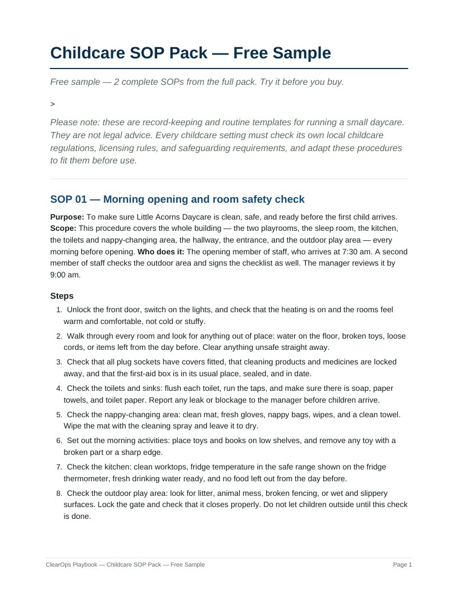

Childcare
Childcare SOP Pack
Ten ready-to-use procedures for a small daycare, written out in full — no blanks to fill in. From the morning safety check to sign-in, meals and allergies, sleep time, accidents, medicine, fire drills, and closing up, every step is set out in plain English around one example setting: Little Acorns Daycare, 24 children and 6 staff. Print it, hand it to your team, and run the day the same safe way, every day.

Running a small daycare means the same important jobs have to be done right every single day: opening the rooms safely, signing children in and out, changing nappies, serving food, settling children to sleep, and knowing exactly what to do when something goes wrong. The Childcare SOP Pack gives you ten ready-to-use procedures that cover the whole day at Little Acorns Daycare, a small daycare for 24 children with 6 staff, from the morning safety check at 7:30 am to the final lock-up at the end of the day. Every procedure is written out in full, in plain, simple English, with realistic details your staff can follow straight away — no blanks to fill in, no jargon, and no guessing.
Each SOP follows the same clear structure, so staff always know where to look: Purpose, Scope, Who does it, numbered Steps, a Quality check, If it goes wrong, and Records. That means a new member of staff can pick up a procedure and follow it on their first day, and a manager can check that the work was done properly just by reading the record at the end of it. The pack covers the routines that matter most in a childcare setting.
It starts with opening checks and arrival, then moves through collection and authorised pickups, nappy changing and hygiene, meals, snacks and allergies, and sleep and rest time. It also covers the harder moments: accidents and incident reporting, giving medicine safely with two signatures, fire drills and evacuation, and end-of-day closing and handover. Because every example uses the same invented setting — Little Acorns Daycare, 24 children, 6 staff — the procedures read as one joined-up set, not ten separate documents.
You can use them as they are, or adapt the names, times, and room details to fit your own setting. The pack is supplied as a PDF, a Word document, and a Markdown file, so you can print it for the staff room, keep a copy on a computer, or edit it to match how your daycare works. A free sample with the first two SOPs in full is available, so you can try it before you buy.
Please note that these are record-keeping and routine templates, not legal advice, and you must check your own local childcare regulations before use.
Watch the video
A quick look at the daycare this pack was written for.
What's inside
- SOP 01 — Morning opening and room safety check
- SOP 02 — Child arrival and sign-in
- SOP 03 — Child collection and authorised pickups
- SOP 04 — Nappy changing and hygiene
- SOP 05 — Meals, snacks and allergies
- SOP 06 — Sleep and rest time
- SOP 07 — Accidents and incident reporting
- SOP 08 — Giving medicine
- SOP 09 — Fire drill and evacuation
- SOP 10 — End-of-day closing and handover
- PDF version — ready to print for the staff room
- Word (.docx) version — easy to edit for your own setting
- Markdown (.md) version — plain-text source file
- Daily Records spreadsheet (.xlsx) — 9 tabs for opening & closing, sign-in & sign-out, nappy chart, food sheet, fridge temps, sleep chart, accident log, medicine log and fire drill log. Works in Excel and Google Sheets.
Try the free version
The free version has SOP 01 and SOP 02 in full from this exact pack, in PDF, Word and Markdown. No sign-up, no email.
The full pack
The full pack has all 10 procedures in PDF, Word and Markdown, plus the Daily Records spreadsheet (.xlsx). The buy button takes you to the Etsy listing, where you can buy and download it right away. In the meantime, the free version above shows you exactly what the paid pack is like.
All sales of digital downloads are final. Please download the free version first and make sure this pack fits your business before you buy.